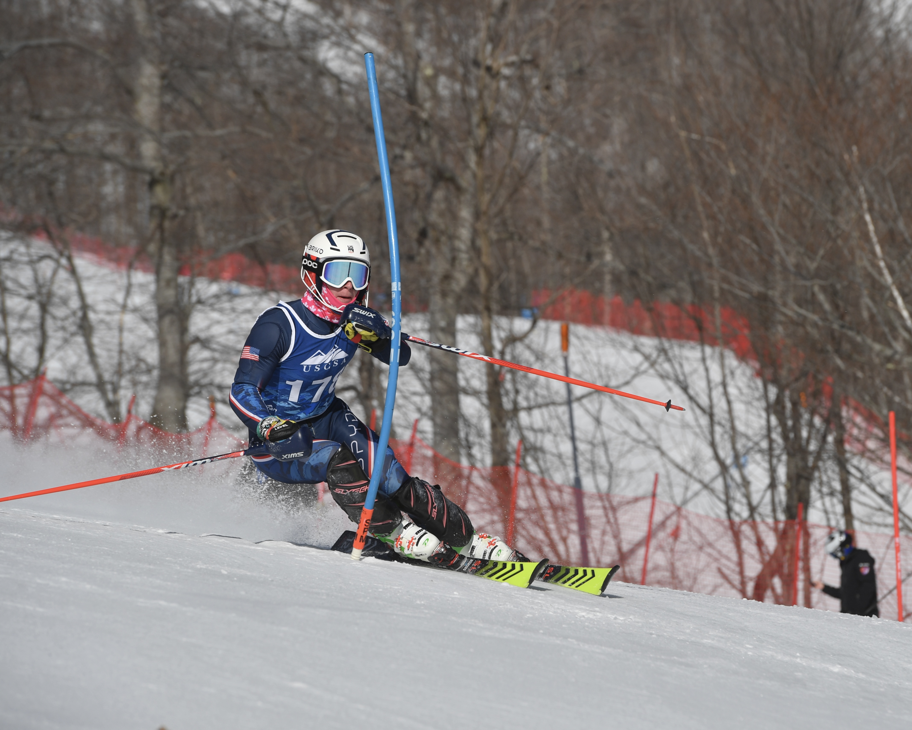
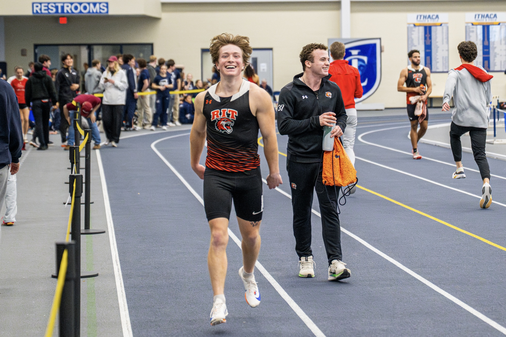
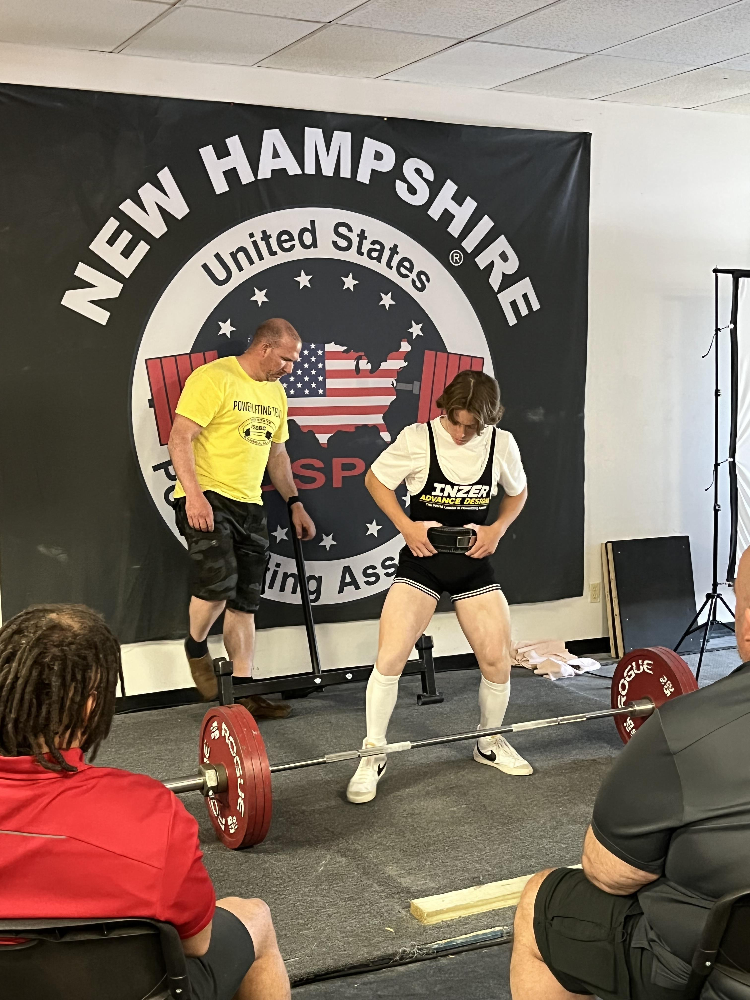
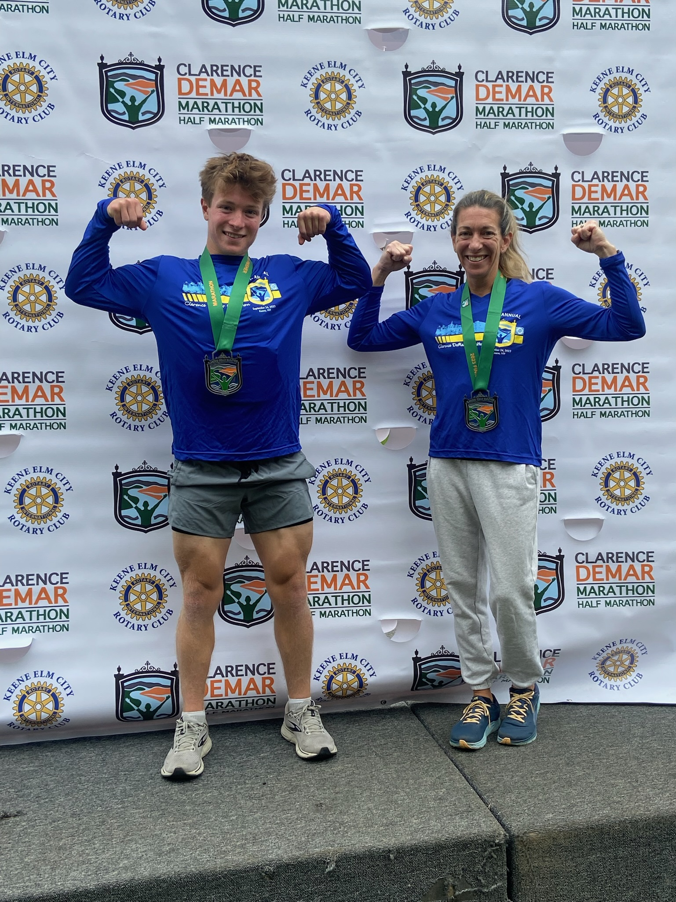

Leadership, athletics, and community involvement that have shaped my professional development.
Qualified for and competed at the USCSA (United States Collegiate Ski and Snowboard Association) National Championships, representing UNC Chapel Hill. The precision, focus, and composure required translates directly into high-pressure academic and professional settings.

Competed as a varsity sprinter specializing in the 100m and 200m events. Committed 15–20 hours per week to structured training while maintaining a 3.8 GPA — demonstrating the discipline, time management, and competitive drive that carry directly into academic and professional pursuits.

Competed in the 60kg (132.2 lb) weight class and held a United States Powerlifting Association (USPA) national record in the squat discipline. Vermont state records in all three lifts and total still stand. The records were set on May 21, 2022:

Apply data analytics and technology skills to real-world client consulting projects. Attended speaker and networking events with professionals from McKinsey, Google, Microsoft, Accenture, SAS, and TD Securities — building exposure to how data strategy and technology intersect with business and strategic advisory work.
Completed the Clarence DeMar Marathon in Keene, New Hampshire in September 2023 — a USATF-certified, Boston-qualifying 26.2-mile course. I'm Currently training for the M&T Bank Vermont City Marathon in Burlington, Vermont, scheduled for May 25, 2025. Marathon training depends on the same qualities that translate directly to long-term academic and professional work: sustained focus, structured preparation, and the ability to push through difficulty without losing form.

Mentored an international student through weekly conversational English sessions, facilitating a smoother academic and cultural transition. Developed cross-cultural communication skills and a commitment to building inclusive campus communities.